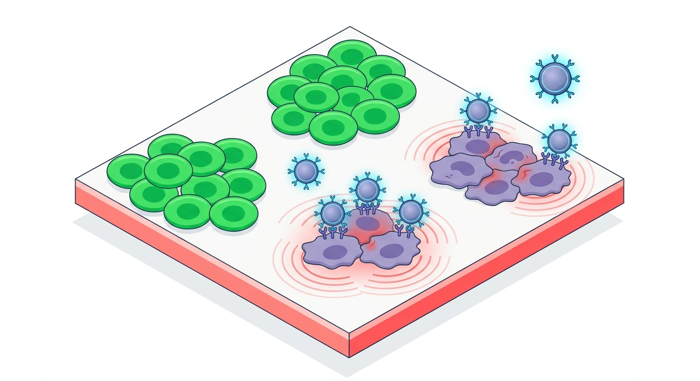

The Precision Sniper of Senolytics: Nanoparticles Disarm Bad Zombie Cells While Sparing the Good

For years, cellular senescence has been framed as longevity science’s ultimate double-edged sword. On one hand, these so-called "zombie cells" stop dividing to prevent damaged DNA from turning into full-blown cancer. On the other, they linger in tissues, spewing a cocktail of inflammatory signals that drive chronic scarring and organ decline. The biotech world’s answer has been senolytics—drugs designed to wipe these cells out. But standard senolytics operate like carpet bombers: in clearing out the destructive senescent cells driving fibrosis, they also destroy beneficial senescent cells that actively repair blood vessels and preserve tissue architecture. This blunt force approach has resulted in systemic toxicities, stalling one of longevity medicine’s most promising fronts.
Now, a groundbreaking strategy detailed in Cancer Research highlights a clever way past this bottleneck. A research team led by Hinterleitner and colleagues recognized that the key to safe senotherapy isn't killing all zombie cells, but selecting the right ones. The researchers identified a specific surface marker—P-selectin—that acts like a beacon exclusively on pathogenic senescent macrophages in damaged organs. Leveraging this marker, they engineered P-selectin-directed Senescence-Modulating Nanoparticles (SMNPs). These microscopic smart missiles carry senotherapeutic payloads directly to the harmful macrophages causing tissue scarring, while floating harmlessly past beneficial senescent endothelial cells that keep blood vessels intact.
The experimental results in preclinical models were striking. When administered to mice suffering from liver and lung fibrosis, the SMNPs selectively targeted the culprit macrophages, clearing the fibrotic buildup and restoring actual organ function without the debilitating off-target side effects seen with untargeted senolytics. But the implications stretch far beyond organ scarring: in tumor models, these fibrotic macrophages act as biological fortress walls, physically blocking immune cells from reaching malignant tissues. By surgically eliminating this macrophage population, SMNPs dismantled the tumor's defensive barrier, allowing T-cell immunotherapies to breach cold tumors in the lung and liver and trigger dramatic regression. Crucially, tests on human tissue samples revealed that these same P-selectin+ senescent macrophages are enriched in fibrotic patient organs and treatment-resistant tumors, confirming a direct link to human disease.
While this targeted nanomedicine platform marks a milestone for longevity biotechnology, significant translational hurdles remain before SMNPs reach the clinic. Mouse immune microenvironments and nanoparticle clearance rates differ markedly from those in humans, meaning the precise dosing and biodistribution will require painstaking optimization. Furthermore, cell surface markers like P-selectin are not static; human cellular heterogeneity means expression levels could vary between patients or shift over the course of chronic disease, potentially causing off-target uptake or reduced efficacy. Manufacturing complex, targeted nanocarriers at clinical scale under strict quality control presents another costly challenge. As exciting as these smart nanoparticles are, bridging the gap from murine proof-of-concept to safe, reproducible human therapies will be a long and cautious journey.
Insights from Longevity KG: While conventional senolytics treat cellular senescence by broadly purging senescent cells, this target-selective nanoparticle approach aligns with broader insights into tissue microenvironments. Chronic cellular senescence causes inflammation through the secretory phenotype, and within oncology, tumor-associated macrophages promote cancer by mediating immune exclusion. Furthermore, because standard oncology interventions frequently trigger therapy-induced senescence, which paradoxically accelerates disease recurrence, deployment of targeted platforms like SMNPs provides a vital mechanism to neutralize harmful senescent macrophages while preserving tissue repair capacity.
Sources & Citations:
Primary Source: Senescence-modulating nanoparticles SELECT the right senescent cells to treat fibrosis and cancer. (Cancer research)
- Hinterleitner et al., "Senescence-modulating nanoparticles SELECT the right senescent cells to treat fibrosis and cancer." Cancer Research, 2026. DOI: 10.1158/0008-5472.CAN-26-4564.